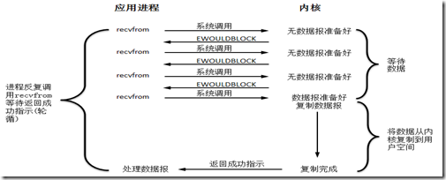
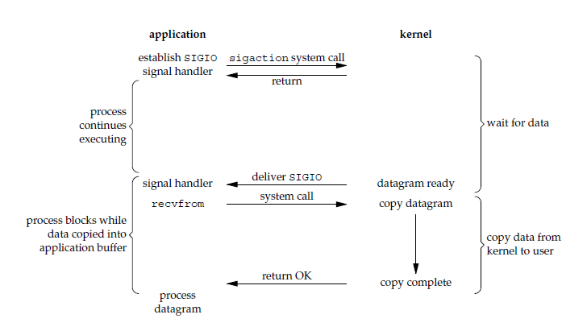

对程序员而言，
I/O操作是程序中最常见的操作之一。比如说磁盘文件的读写、数据的网络传输等等。程序=数据结构+算法，其中数据元素的获取就必须通过I/O操作来完成。在当今这个数据大爆炸时代，I/O问题尤其突出，很容易成为一个性能瓶颈。
然而很多程序员甚至是高级程序员对I/O操作只是停留在会用的阶段，遇到相应的业务场景只是去COPY一段代码，小型项目这样当然没问题，对于I/O密集型的项目，如果理解不深，有可能会造成严重的问题。实际工作中我也是这样，经常在网上找一段代码不去分析他的原理，从而走了不少弯路。作为Java程序员，深入的理解I/O操作很有必要，所以在这里做一个系统的整理。
基础概念
用户空间和内核空间
现在操作系统都是采用虚拟存储器，那么对32位操作系统而言，它的寻址空间（虚拟存储空间）为4G。操作系统的核心是内核，独立于普通的应用程序，可以访问受保护的内存空间，也有访问底层硬件设备的所有权限。为了保证用户进程不能直接操作内核（kernel），保证内核的安全，操心系统将虚拟空间划分为两部分，一部分为内核空间，一部分为用户空间。针对linux操作系统而言，将最高的1G字节（从虚拟地址0xC0000000到0xFFFFFFFF），供内核使用，称为内核空间，而将较低的3G字节（从虚拟地址0x00000000到0xBFFFFFFF），供各个进程使用，称为用户空间。
进程切换
为了控制进程的执行，内核必须有能力挂起正在CPU上运行的进程，并恢复以前挂起的某个进程的执行。这种行为被称为进程切换。因此可以说，任何进程都是在操作系统内核的支持下运行的，是与内核紧密相关的。
从一个进程的运行转到另一个进程上运行，这个过程中经过下面这些变化：
- 保存处理机上下文，包括程序计数器和其他寄存器。
- 更新
PCB信息。 - 把进程的
PCB移入相应的队列，如就绪、在某事件阻塞等队列。 - 选择另一个进程执行，并更新其
PCB。 - 更新内存管理的数据结构。
- 恢复处理机上下文。
注：总而言之就是很耗资源。
进程的阻塞
正在执行的进程，由于期待的某些事件未发生，如请求系统资源失败、等待某种操作的完成、新数据尚未到达或无新工作做等，则由系统自动执行阻塞原语(Block)，使自己由运行状态变为阻塞状态。可见，进程的阻塞是进程自身的一种主动行为，也因此只有处于运行态的进程（获得CPU），才可能将其转为阻塞状态。当进程进入阻塞状态，是不占用CPU资源的。
简单点说就是等别人完成事务后你才能继续你的工作。
文件描述符fd
文件描述符（File descriptor）是计算机科学中的一个术语，是一个用于表述指向文件的引用的抽象化概念。
文件描述符在形式上是一个非负整数。实际上，它是一个索引值，指向内核为每一个进程所维护的该进程打开文件的记录表。当程序打开一个现有文件或者创建一个新文件时，内核向进程返回一个文件描述符。在程序设计中，一些涉及底层的程序编写往往会围绕着文件描述符展开。但是文件描述符这一概念往往只适用于UNIX、Linux这样的操作系统
缓存 I/O
缓冲区及操作是所有I/O的基础，进程执行I/O操作，归结起来就是向操作系统发出请求，让它要么把缓冲区里的数据排干（写），要么把缓冲区填满（读）。如下图
缓存 I/O 的缺点：
数据在传输过程中需要在应用程序地址空间和内核进行多次数据拷贝操作(先将数据准备到内核空间，再将数据拷贝到用户空间)，这些数据拷贝操作所带来的 CPU 以及内存开销是非常大的。
I/O模型
对于一次IO访问（以read举例），数据会先被拷贝到操作系统内核的缓冲区中，然后才会从操作系统内核的缓冲区拷贝到应用程序的地址空间。所以说，当一个read操作发生时，它会经历两个阶段：
- 等待数据准备 (
Waiting for the data to be ready) - 将数据从内核拷贝到进程中 (
Copying the data from the kernel to the process)
根据这两个阶段，有下面5种I/O模型:
- 阻塞
I/O（blocking IO） - 非阻塞
I/O（nonblocking IO） I/O多路复用（IO multiplexing）- 信号驱动
I/O（signal driven IO） - 异步
I/O（asynchronous IO）
阻塞I/O

当用户进程调用了recvfrom这个系统调用，kernel就开始了IO的第一个阶段：准备数据（对于网络IO来说，很多时候数据在一开始还没有到达。比如，还没有收到一个完整的UDP包。这个时候kernel就要等待足够的数据到来，磁盘I/O的情况就是等待磁盘数据从磁盘上读取到内核态内存中）。这个过程需要等待，也就是说数据被拷贝到操作系统内核的缓冲区中是需要一个过程的。而在用户进程这边，整个进程会被阻塞（当然，是进程自己选择的阻塞）。当kernel一直等到数据准备好了，它就会将数据从kernel中拷贝到用户内存(出于系统安全,用户态的程序没有权限直接读取内核态内存,因此内核负责把内核态内存中的数据拷贝一份到用户态内存中)，然后kernel返回结果，用户进程才解除block的状态，重新运行起来。
所以，blocking IO的特点就是在IO执行的两个阶段都被block了。
非阻塞I/O
socket 设置为 NONBLOCK（非阻塞）就是告诉内核，当所请求的 I/O 操作无法完成时，不要将进程睡眠，而是返回一个错误码(EWOULDBLOCK) ，这样请求就不会阻塞。

当用户进程发出read操作时，如果kernel中的数据还没有准备好，那么它并不会block用户进程，而是立刻返回一个error。从用户进程角度讲 ，它发起一个read操作后，并不需要等待，而是马上就得到了一个结果。用户进程判断结果是一个error时，它就知道数据还没有准备好，于是它可以再次发送read操作。一旦kernel中的数据准备好了，并且又再次收到了用户进程的system call，那么它马上就将数据拷贝到了用户内存，然后返回。I/O 操作函数将不断的测试数据是否已经准备好，如果没有准备好，继续测试，直到数据准备好为止。整个I/O 请求的过程中，虽然用户线程每次发起 I/O 请求后可以立即返回，但是为了等到数据，仍需要不断地轮询、重复请求，消耗了大量的 CPU的资源
所以，nonblocking IO的特点是用户进程需要不断的主动询问kernel数据好了没有。在数据拷贝阶段，用户进程还是阻塞的。
一般很少直接使用这种模型，而是在其他 I/O 模型中使用非阻塞 I/O 这一特性。这种方式对单个 I/O 请求意义不大,但给 I/O 多路复用铺平了道路。
I/O多路复用
I/O 多路复用会用到 select 或者 poll 函数，这两个函数也会使进程阻塞，但是和阻塞 I/O 所不同的的，这两个函数可以同时阻塞多个 I/O 操作。而且可以同时对多个读操作，多个写操作的 I/O 函数进行检测，直到有数据可读或可写时，才真正调用 I/O 操作函数。
从流程上来看，使用 select 函数进行 I/O 请求和同步阻塞模型没有太大的区别，甚至还多了添加监视 socket，以及调用 select 函数的额外操作，效率更差。但是，使用 select 以后最大的优势是用户可以在一个线程内同时处理多个 socket 的 I/O 请求。用户可以注册多个 socket，然后不断地调用 select 读取被激活的 socket，即可达到在同一个线程内同时处理多个 I/O 请求的目的。而在同步阻塞模型中，必须通过多线程的方式才能达到这个目的。其实多路复用是同步非阻塞模型的Reactor模式的实现。
信号驱动IO
首先我们允许 socket 进行信号驱动 I/O,并安装一个信号处理函数，进程继续运行并不阻塞。当数据准备好时，进程会收到一个 SIGIO 信号，可以在信号处理函数中调用 I/O 操作函数处理数据。

异步IO

用户进程发起read操作之后，立刻就可以开始去做其它的事。而另一方面，从kernel的角度，当它受到一个asynchronous read之后，首先它会立刻返回，所以不会对用户进程产生任何block。然后，kernel会等待数据准备完成，然后将数据拷贝到用户内存，当这一切都完成之后，kernel会给用户进程发送一个signal，告诉它read操作完成了。
总结
BIO方式适用于连接数目比较小且固定的架构，这种方式对服务器资源要求比较高(服务器实现模式为一个连接一个线程，即客户端有连接请求时服务器端就需要启动一个线程进行处理，如果这个连接不做任何事情会造成不必要的线程开销，当然可以通过线程池机制改善。),并发局限于应用中，JDK1.4以前的唯一选择，但程序直观简单易理解。NIO方式适用于连接数目多且连接比较短（轻操作）的架构，比如聊天服务器，并发局限于应用中，编程比较复杂，JDK1.4开始支持。AIO方式使用于连接数目多且连接比较长（重操作）的架构，比如相册服务器，充分调用OS参与并发操作，编程比较复杂，JDK7开始支持。